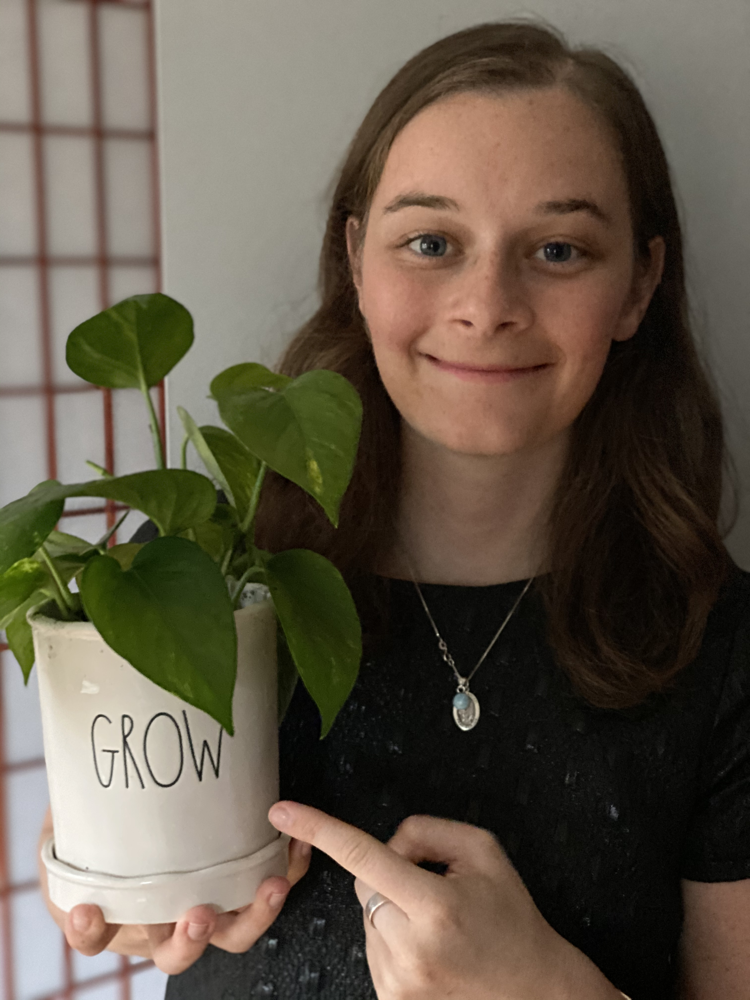

Meet the team that makes this scholarship possible! If you have specific scholarship-related questions, please use the contact information at the bottom of the page. If you have individual questions for us, feel free to reach out! We love hearing from you!

Hannah Bossi is a PhD student at Yale University and an NSF GRFP Fellow. She studies nuclear physics working on the ALICE experiment which is a detector at the world's largest machine; the Large Hadron Collider. There, she studies the results of extremely hot and dense heavy-ion collisions which are designed to recreate the conditions of the early universe. Outside of physics, Hannah is a fan of almost anything outside. Whether it's running, hiking, yoga, rock climbing, or skiing - she is always up for some time outside with friends!
Email: hannah.bossi@yale.edu, Twitter: Follow @HannahBossi, Personal Website

Brittany Bossi is a registered nurse with her master’s degree from the University of New Hampshire. Her STEM background began as an inquisitive child and continued into adulthood with a bachelor’s degree in Biology from Colby College. She’s passionate about helping others and the environment and loves to explore all that the world has to offer. She’s an avid plant mom and loves to ski and write poetry.
If you have specific a question about the scholarship, feel free to use our email growingstems4stem@gmail.com. If you would like to subscribe to get email upates from us, send an email to growingstemsupdates+subscribe@googlegroups.com.
Twitter: Follow @stems4stem , Instagram: @growingstems4stem